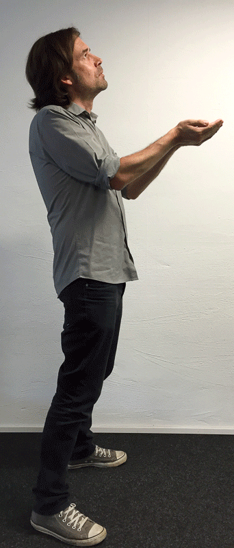

The "Prenote" is a time-honored DrupalCon tradition; it is the first session of the conference, directly before the Driesnote, and it is loads of fun. This year, everyone has a chance to participate in the Prenote, even if you're not coming to Barcelona. Here are 8.0.0 reasons how you can pitch in and make this Prenote totalmente excelente.
1.0.0, Come to the show: If you're attending DrupalCon Barcelona, come to the show! It's at 8:00am on Tuesday, Sept. 22, in the same room as the Driesnote, so you get good seats to see Dries. You also have a good motivation not to drink yourself into oblivion Monday night, and start the DrupalCon bright and early.
2.0.0, Watch the livestream: This is for those of you who won't be there in person. Thankfully, you can watch the live stream and be with us in spirit. 8:00am is 2:00am Eastern Standard, so it's just right for you night owls on the East Coast.
3.0.0, Make a video cameo: We wil be incorporating video volunteers into the show. Sign up below and indicate that you want to be a "video volunteer" and you'll get a set of instructions to follow to make a few very short, very easy videos that we can use. No et preocupis, és molt fàcil!
4.0.0, Be an offstage volunteer: We need a few people who will be at the session who can help us run some critical systems offstage. You get to be part of the show but you don't have to memorise any lines.
Onstage volunteers: We need people who can rehearse with us on Monday (and possibly Sunday) and actually be part of the show. We've got big roles and small roles, so if it sounds like fun, let us know by filling out the form below, and we'll do our best to work you in. In particular, we definitely need people who can be the following:
- 5.0.0. Spanish language and cultural guides
- 6.0.0. Catalan language and cultural guides
- 7.0.0. Musicians and dancers of all sorts
8.0.0. Send us photos of yourself:
That's right, we're going to make a cool photo montage that has special meaning in the show, and you can be part of it by taking pictures of yourselves in these poses and sending them to us. Detailed instructions are below, but let's just say that it's significant that this is point 8.0.0. =)
Photo instructions: Take all four photos with a white wall behind you, ideally as devoid of visual features as possible.
- Photo 1: Stand with your left arm to the wall, look forward (not at the camera), cupping your hands together, as if you're expecting a present from Dries. Who knows.... maybe you are?
- Photo 2: Stand with your left side to the wall, look forward (not at the camera). Right leg forward, left leg back, bend at the knees. Right arm forward, fist facing up. Left arm back fist facing down.
Here are the poses for Photos 1 & 2.
 |
{kind=link}
{kind=link}
- Photo 3: Stand with your left side to the wall, look forward (not at the camera). Put both arms forward and git push. Important, make sure to stick out your bum towards the rear!
- Photo 4: Stand with your left side to the wall, look at the camera and grin like a fool. In a half squat, pump both fists, elbows in at your sides, and think Drupal 8.0.0. ROCKS!.
Here are the poses for Photos 3 & 4.
{kind=link}
{kind=link}